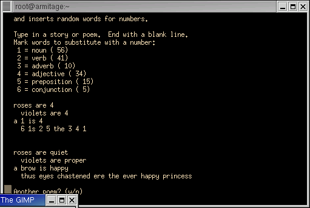

File : poetry.sp

#!/usr/local/bin/spar
pragma ada_95;
procedure poetry is
-- Ken's Business Shell Poetry Generator
pragma annotate( "SparForte Poetry Generator" );
pragma annotate( "" );
pragma annotate( " created for PegaSoft Summer Programming Challenge" );
pragma annotate( "" );
pragma annotate( "Usage: poetry" );
nouns : string;
verbs : string;
adverbs : string;
adjectives : string;
prepositions : string;
conjunctions : string;
separator : constant character := ASCII.NUL;
noun_count : natural := 1;
verb_count : natural := 1;
adverb_count : natural := 1;
adjective_count : natural := 1;
preposition_count : natural := 1;
conjunction_count : natural := 1;
poem : string;
begin
put_line( "Creating word lists and counting items..." );
nouns := "apple" & separator &
"albatross" & separator &
"bed" & separator &
"brow" & separator &
"butterfly" & separator &
"castle" & separator &
"chocolate" & separator &
"cottage" & separator &
"dragonfly" & separator &
"dawn" & separator &
"day" & separator &
"evening" & separator &
"eye" & separator &
"ear" & separator &
"fire" & separator &
"frost" & separator &
"ghost" & separator &
"glare" & separator &
"house" & separator &
"horse" & separator &
"island" & separator &
"jewel" & separator &
"jaguar" & separator &
"king" & separator &
"kitten" & separator &
"knight" & separator &
"light" & separator &
"lip" & separator &
"moon" & separator &
"morn" & separator &
"night" & separator &
"nibble" & separator &
"nose" & separator &
"ode" & separator &
"orchard" & separator &
"petunia" & separator &
"pond" & separator &
"princess" & separator &
"quest" & separator &
"quandry" & separator &
"room" & separator &
"rabbit" & separator &
"rose" & separator &
"stream" & separator &
"stick" & separator &
"thicket" & separator &
"tree" & separator &
"turret" & separator &
"umbrella" & separator &
"unicorn" & separator &
"violin" & separator &
"vinyard" & separator &
"waterlily" & separator &
"waterfall" & separator &
"yarn" & separator &
"zebra";
verbs := "arrived" & separator &
"began" & separator &
"broke" & separator &
"called" & separator &
"chastened" & separator &
"danced" & separator &
"dove" & separator &
"drank" & separator &
"dug" & separator &
"elevated" & separator &
"evicted" & separator &
"foiled" & separator &
"frisked" & separator &
"galloped" & separator &
"glared" & separator &
"harnessed" & separator &
"harassed" & separator &
"ignored" & separator &
"jumped" & separator &
"kissed" & separator &
"lapped" & separator &
"left" & separator &
"made" & separator &
"mangled" & separator &
"named" & separator &
"nudged" & separator &
"oogled" & separator &
"ousted" & separator &
"pooled" & separator &
"practiced" & separator &
"quieted" & separator &
"recalled" & separator &
"sang" & separator &
"swam" & separator &
"tapped" & separator &
"urged" & separator &
"visited" & separator &
"weeped" & separator &
"wanted" & separator &
"yielded" & separator &
"yodelled";
adverbs := "very" & separator &
"quite" & separator &
"almost" & separator &
"somewhat" & separator &
"hardly" & separator &
"mostly" & separator &
"completely" & separator &
"seldom" & separator &
"ever" & separator &
"never";
adjectives := "white" & separator &
"black" & separator &
"blue" & separator &
"brown" & separator &
"red" & separator &
"green" & separator &
"orange" & separator &
"yellow" & separator &
"pink" & separator &
"glistening" & separator &
"smouldering" & separator &
"bright" & separator &
"dark" & separator &
"loud" & separator &
"soft" & separator &
"hard" & separator &
"quiet" & separator &
"bouncing" & separator &
"boasting" & separator &
"angry" & separator &
"sad" & separator &
"happy" & separator &
"still" & separator &
"rapid" & separator &
"snarky" & separator &
"snooty" & separator &
"naughty" & separator &
"pleasant" & separator &
"proud" & separator &
"pretty" & separator &
"proper" & separator &
"boring" & separator &
"chatty" & separator &
"slow";
prepositions := "through" & separator &
"in" & separator &
"over" & separator &
"under" & separator &
"behind" & separator &
"before" & separator &
"beyond" & separator &
"beneath" & separator &
"above" & separator &
"beside" & separator &
"since" & separator &
"ere" & separator &
"out" & separator &
"within" & separator &
"despite";
conjunctions := "and" & separator &
"or" & separator &
"but" & separator &
"though" & separator &
"thus";
-- Count Items Lists
-- Variables start as "1" to count the final item (no separator)
for i in 1..strings.length( nouns ) loop
if strings.element( nouns, i ) = separator then
noun_count := noun_count + 1;
end if;
end loop;
for i in 1..strings.length( verbs ) loop
if strings.element( verbs, i ) = separator then
verb_count := verb_count + 1;
end if;
end loop;
for i in 1..strings.length( adjectives ) loop
if strings.element( adjectives, i ) = separator then
adjective_count := adjective_count + 1;
end if;
end loop;
for i in 1..strings.length( adverbs ) loop
if strings.element( adverbs, i ) = separator then
adverb_count := adverb_count + 1;
end if;
end loop;
for i in 1..strings.length( prepositions ) loop
if strings.element( prepositions, i ) = separator then
preposition_count := preposition_count + 1;
end if;
end loop;
for i in 1..strings.length( conjunctions ) loop
if strings.element( conjunctions, i ) = separator then
conjunction_count := conjunction_count + 1;
end if;
end loop;
--- Main Title
new_line;
put_line( "Poetry Generator" );
new_line;
put_line( "This script takes an outline of a story or a poem" );
put_line( "and inserts random words for numbers." );
new_line;
put_line( "Type in a story or poem. End with a blank line." );
put_line( "Mark words to substitute with a number:" );
put_line( " 1 = noun (" & strings.image( noun_count ) & ")" );
put_line( " 2 = verb (" & strings.image( verb_count ) & ")" );
put_line( " 3 = adverb (" & strings.image( adverb_count ) & ")" );
put_line( " 4 = adjective (" & strings.image( adjective_count ) & ")" );
put_line( " 5 = preposition (" & strings.image( preposition_count ) & ")" );
put_line( " 6 = conjunction (" & strings.image( conjunction_count ) & ")" );
new_line;
-- read the poem
declare
line : string;
begin
loop
line := get_line;
exit when strings.length( line ) = 0;
poem := poem & line & ASCII.LF;
end loop;
end;
if strings.length( poem ) = 0 then
put_line( "Not today? Bye" );
return;
end if;
-- Generate New Poems
declare
new_poem : string;
ch : character;
reply : string;
begin
loop
new_poem := "";
for poem_pos in 1..strings.length( poem ) loop
ch := strings.element( poem, poem_pos );
case ch is
when '1' =>
new_poem := new_poem & strings.field( nouns,
natural( float( noun_count ) * numerics.random ) + 1,
separator );
when '2' =>
new_poem := new_poem & strings.field( verbs,
natural( float( verb_count ) * numerics.random ) + 1,
separator );
when '3' =>
new_poem := new_poem & strings.field( adverbs,
natural( float( adverb_count ) * numerics.random ) + 1,
separator );
when '4' =>
new_poem := new_poem & strings.field( adjectives,
natural( float( adjective_count ) * numerics.random ) + 1,
separator );
when '5' =>
new_poem := new_poem & strings.field( prepositions,
natural( float( preposition_count ) * numerics.random ) + 1,
separator );
when '6' =>
new_poem := new_poem & strings.field( conjunctions,
natural( float( conjunction_count ) * numerics.random ) + 1,
separator );
when others =>
new_poem := new_poem & ch;
end case;
end loop;
new_line;
put_line( new_poem );
put_line( "Another poem? (y/n)" );
reply := get_line;
exit when reply = "n" or reply = "N";
end loop;
end;
put_line( "Bye" );
end poetry;